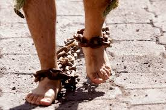

Actividades que se llevan a cabo
A unos días de que inicie la temporada de semana santa en el Municipio de Atlixco, se llevarán a cabo diferentes actividades, iniciando este domingo veinte de marzo y culminando el veintisiete de marzo, domingo de resurrección. Se celebrarán misas, procesiones y confesiones
Bendición de palmas
Ya como es tradicional en la iglesia católica, la semana mayor, la semana santa inicia con el domingo de ramos. Queremos celebrar o conmemorar la entrada triunfal de Jesús a Jerusalén, entonces aquí nosotros vamos hacer misas el domingo. En esta parroquia de la asunción, vamos a llevar a cabo la bendición de las palmas
Engrillados
Mencionó que como cada año también se llevarán a cabo los ya tradicionales engrillados que recorren las principales calles del municipio de Atlixco con pesadas cadenas y espinas clavadas en el cuerpo. Esto tendrá lugar el día viernes santo a las diez de la mañana, partiendo de la iglesia de la tercera orden.

Penitencia
Es una labor que la iglesia debe apoyar, porque es un acto penitencial el que ellos hacen y para ello se preparan. Creo que es una ofrenda agradable al señor porque es un sacrificio de reconciliación con Dios, pidiéndole perdón por sus pecados y ofreciéndole este acto penitenciario.

Decoraciones
Durante todo este tiempo las calles se alfombran de tapetes hechos de acerrín con diferentes diseños referentes a la semana santa y en el zócalo del municipio decoran con plantas de la temporada.